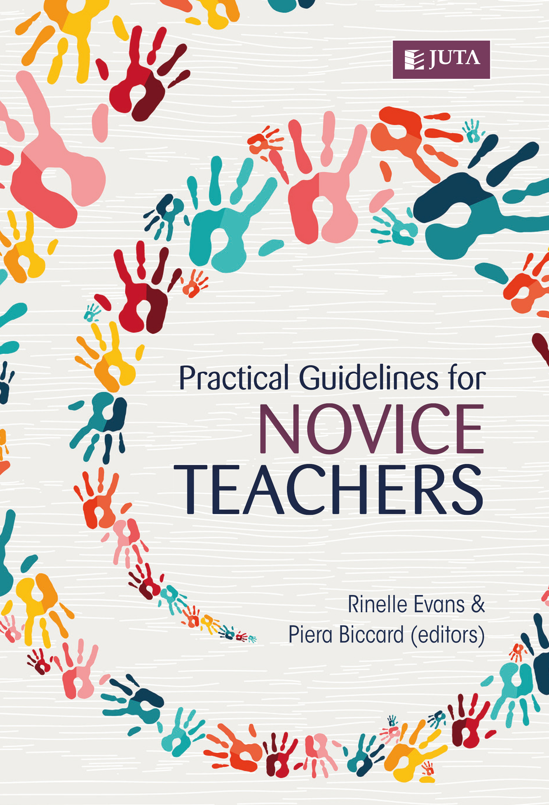

Practical Guidelines for Novice Teachers
The day-to-day complexities of teaching in South African classrooms are particularly challenging
for novice teachers. Although equipped with knowledge and competencies from their years of
study, often there is a gap between what new teachers know and how to apply that knowledge
in a ‘real’ classroom.
- Teaching as a career in South Africa — what does it really entail?
- You as a new professional — what does this mean, how does it change your identity and
how do you look after yourself.
- Diverse learners — how to deal with differing learning styles, temperaments and
behaviours in one classroom.
- Classroom matters — from surviving the 1st day to making your own inexpensive
resources.
- Extracurricular activities — from coaching to organising a school function.

Check me out